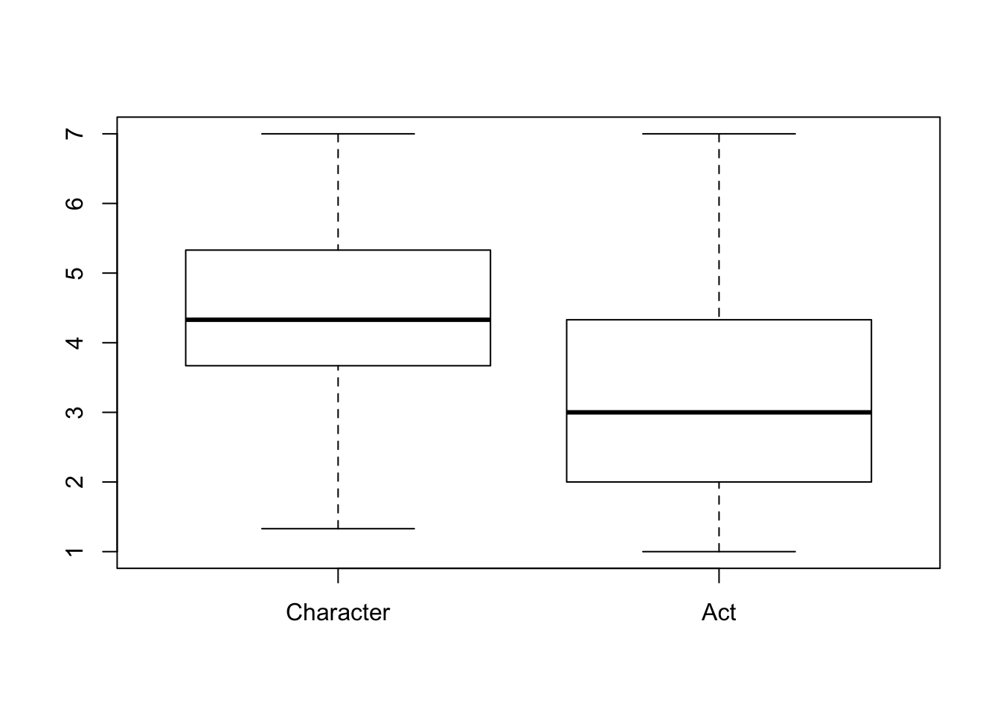
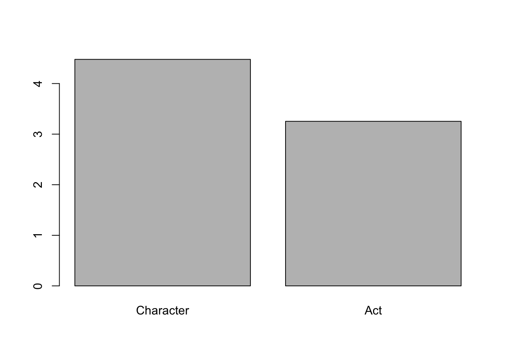
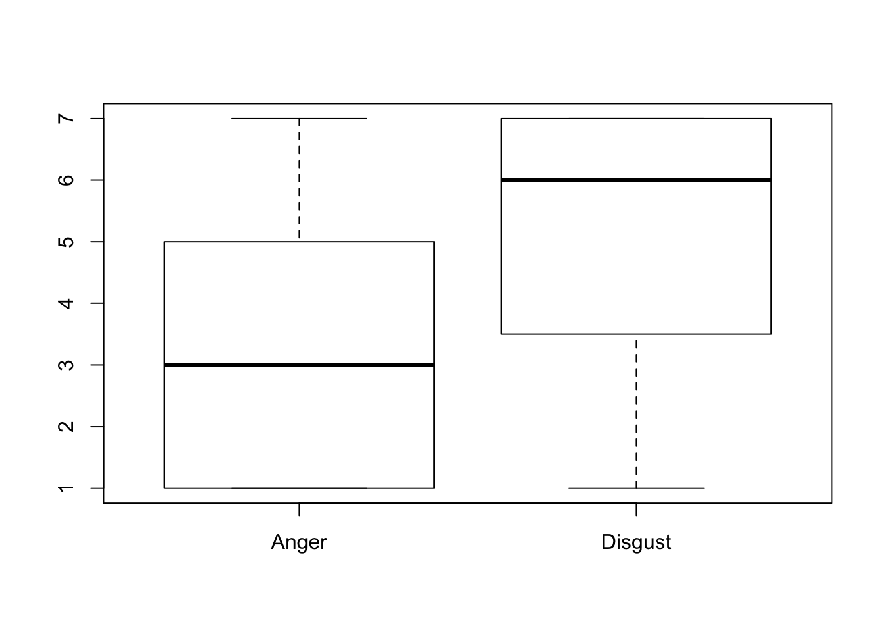
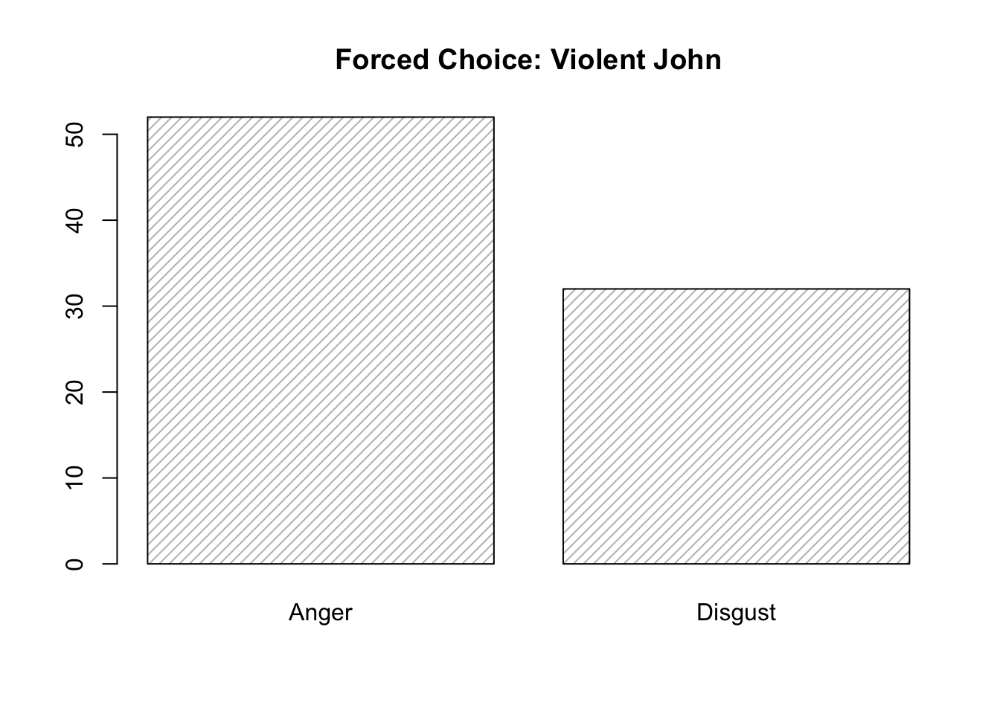
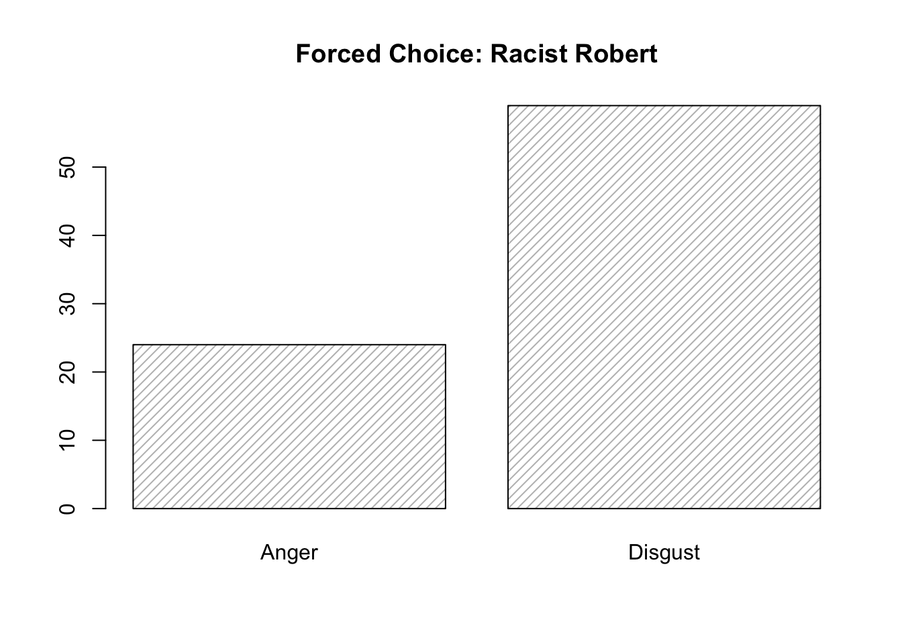
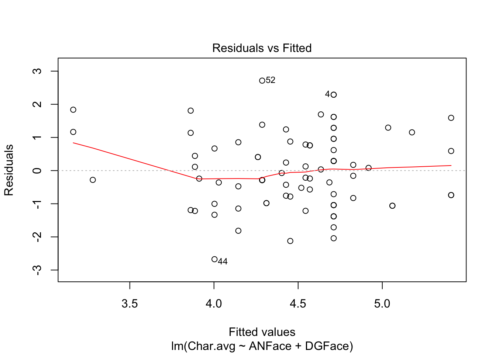
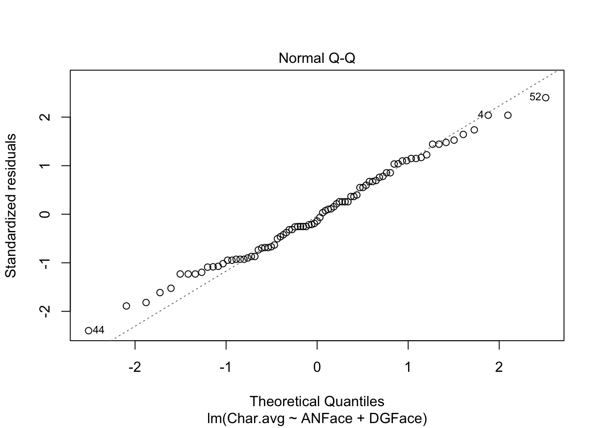
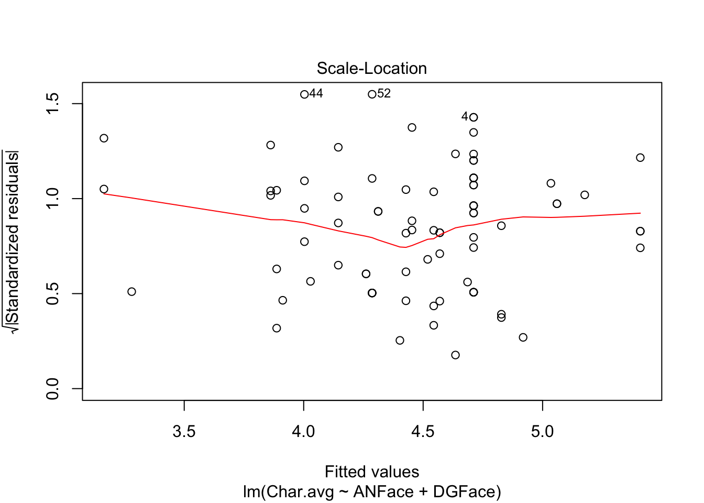
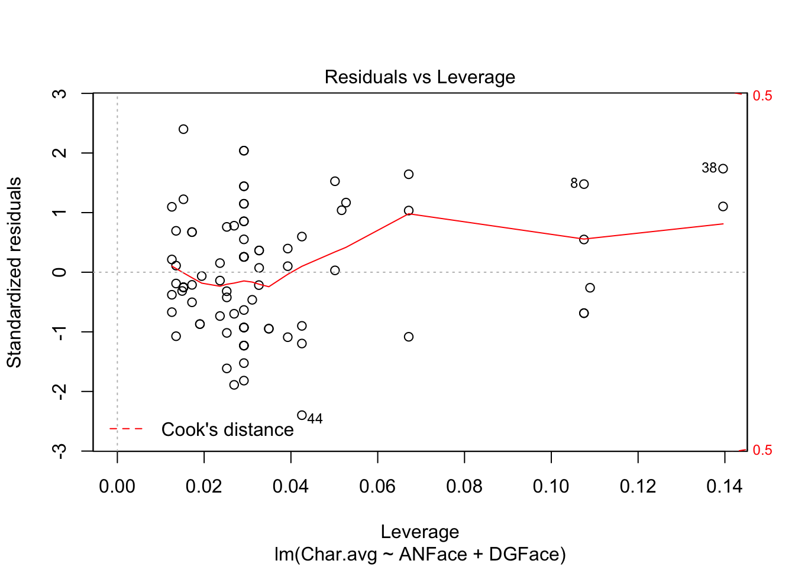
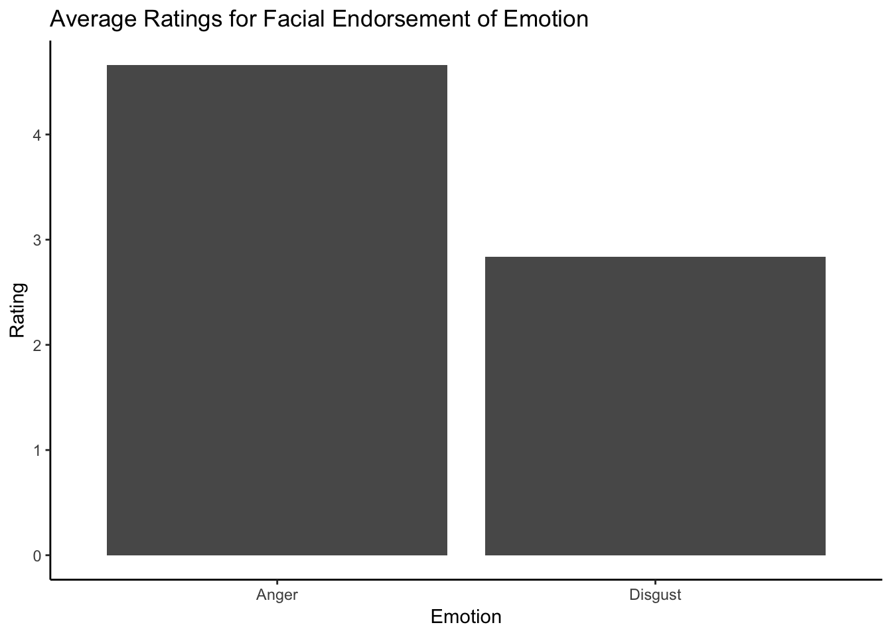

Data is organized so that higher numbers indicate feelings towards ROBERT(RACIST) and lower numbers indicate feelings towards JOHN(VIOLENT)
Calculate Cronbach’s Alpha on the items
\(\alpha_{Faces} =\) 0.7822103
\(\alpha_{Words} =\) 0.8955582
Paired samples t-test comparing act and character ratings (two-tailed)

Paired t-test
data: Char.avg and Act.avg
t = 7.3476, df = 82, p-value = 1.348e-10
alternative hypothesis: true difference in means is not equal to 0
95 percent confidence interval:
0.8930316 1.5561250
sample estimates:
mean of the differences
1.224578 
One-sample t-tests comparing act and character ratings to 4 (midpoint of scale) (two-tailed)
One Sample t-test
data: Char.avg
t = 3.5993, df = 82, p-value = 0.0005448
alternative hypothesis: true mean is not equal to 4
95 percent confidence interval:
4.213788 4.742116
sample estimates:
mean of x
4.477952
One Sample t-test
data: Act.avg
t = -4.281, df = 82, p-value = 5.017e-05
alternative hypothesis: true mean is not equal to 4
95 percent confidence interval:
2.906427 3.600320
sample estimates:
mean of x
3.253373 Disgust word items will be averaged together and anger word items will be averaged together. We will compute the correlation between disgust and anger for the word items and for the face items. Items with disgust-anger correlations greater than r = 0.70 will not be analyzed. If both word and face items are r < 0.70, both will be used, standardized and averaged.
[1] 0.8111507[1] -0.5345868Paired samples t-test comparing disgust and anger ratings (two-tailed)
Paired t-test
data: Faces$ANFace and Faces$DGFace
t = -4.1997, df = 82, p-value = 6.749e-05
alternative hypothesis: true difference in means is not equal to 0
95 percent confidence interval:
-2.4857178 -0.8877761
sample estimates:
mean of the differences
-1.686747 
One-sample t-tests comparing disgust and anger ratings to 4 (midpoint of scale) (two-tailed)
One Sample t-test
data: Faces$DGFace
t = 4.6434, df = 82, p-value = 1.288e-05
alternative hypothesis: true mean is not equal to 4
95 percent confidence interval:
4.592241 5.480048
sample estimates:
mean of x
5.036145
One Sample t-test
data: Faces$ANFace
t = -2.7648, df = 82, p-value = 0.007033
alternative hypothesis: true mean is not equal to 4
95 percent confidence interval:
2.881282 3.817513
sample estimates:
mean of x
3.349398 Chi-squared test to compare how many participants chose disgust for Racist vs. Violence
1 = Anger
2 = Disgust
Pearson's Chi-squared test with Yates' continuity correction
data: Forced_Choice$FacesForcedChoiceVio and Forced_Choice$FacesForcedChoiceRac
X-squared = 21.157, df = 1, p-value = 4.232e-06
Character, future consequences
Hypothesis: Violent person should be rated as less likely to behave inappropriately/more likely to change their ways going forward
Analysis: Items will be averaged together
One-sample t-test comparing average rating to 4 (midpoint of scale) (two tailed)
One Sample t-test
data: Change_Own_Avg
t = -1.9282, df = 82, p-value = 0.05729
alternative hypothesis: true mean is not equal to 4
95 percent confidence interval:
3.485954 4.008022
sample estimates:
mean of x
3.746988 Items will be averaged together
One-sample t-test comparing average rating to 4 (midpoint of scale)
One Sample t-test
data: change_under_avg
t = -6.1311, df = 82, p-value = 2.919e-08
alternative hypothesis: true mean is not equal to 4
95 percent confidence interval:
2.739365 3.357020
sample estimates:
mean of x
3.048193 Reform
Hypothesis: Reform ratings should be higher for violent vs. racist
Items will be averaged together
One-sample t-test comparing average rating to 4 (midpoint of scale) (two tailed)
One Sample t-test
data: Reform.avg
t = -3.7927, df = 82, p-value = 0.0002839
alternative hypothesis: true mean is not equal to 4
95 percent confidence interval:
3.118355 3.725018
sample estimates:
mean of x
3.421687 Confront
Hypothesis: According to hypothesis that anger = approach and disgust = avoidance, confrontation should be higher for violent vs. racist, since we predict higher anger for violent vs. racist.
Analysis: Items will be averaged together
One-sample t-test comparing average rating to 4 (midpoint of scale) (two tailed)
One Sample t-test
data: Confront.avg
t = -0.055136, df = 82, p-value = 0.9562
alternative hypothesis: true mean is not equal to 4
95 percent confidence interval:
3.553249 4.422654
sample estimates:
mean of x
3.987952 Hypothesis: Should be higher for racist vs. violent
Analysis: Items will be averaged together
One-sample t-test comparing average rating to 4 (midpoint of scale) (two tailed)
One Sample t-test
data: Social_Dis.avg
t = 1.9934, df = 82, p-value = 0.04954
alternative hypothesis: true mean is not equal to 4
95 percent confidence interval:
4.000771 4.746217
sample estimates:
mean of x
4.373494 Personally avoid
Hypothesis: Should be higher for racist vs. violent
Analysis: Items will be averaged together
One-sample t-test comparing average rating to 4 (midpoint of scale) (two tailed)
One Sample t-test
data: Personally_Avoid.avg
t = 2.3782, df = 82, p-value = 0.01972
alternative hypothesis: true mean is not equal to 4
95 percent confidence interval:
4.076842 4.862917
sample estimates:
mean of x
4.46988 Disgust and character:
Analysis: Multiple regression with disgust and anger ratings as simultaneous IVs and character as the DV. Then test for difference between two dependent betas.
Call:
lm(formula = Char.avg ~ ANFace + DGFace, data = Faces)
Residuals:
Min 1Q Median 3Q Max
-2.6732 -0.9046 -0.1575 0.8204 2.7136
Coefficients:
Estimate Std. Error t value Pr(>|t|)
(Intercept) 2.78971 0.54540 5.115 2.1e-06 ***
ANFace 0.11629 0.06944 1.675 0.097904 .
DGFace 0.25788 0.07323 3.522 0.000712 ***
---
Signif. codes: 0 '***' 0.001 '**' 0.01 '*' 0.05 '.' 0.1 ' ' 1
Residual standard error: 1.139 on 80 degrees of freedom
Multiple R-squared: 0.1348, Adjusted R-squared: 0.1131
F-statistic: 6.231 on 2 and 80 DF, p-value: 0.003056
Anger and act:
Analysis: Multiple regression with disgust and anger ratings as simultaneous IVs and act as the DV. Then test for difference between two dependent betas.
Call:
lm(formula = Act.avg ~ ANFace + DGFace, data = Faces)
Residuals:
Min 1Q Median 3Q Max
-2.8486 -0.9660 -0.2765 0.8638 4.2079
Coefficients:
Estimate Std. Error t value Pr(>|t|)
(Intercept) 0.68114 0.71054 0.959 0.340634
ANFace 0.25260 0.09047 2.792 0.006548 **
DGFace 0.34276 0.09540 3.593 0.000563 ***
---
Signif. codes: 0 '***' 0.001 '**' 0.01 '*' 0.05 '.' 0.1 ' ' 1
Residual standard error: 1.484 on 80 degrees of freedom
Multiple R-squared: 0.1487, Adjusted R-squared: 0.1274
F-statistic: 6.986 on 2 and 80 DF, p-value: 0.001599Analysis: Multiple regression with disgust and anger ratings as simultaneous IVs and confront ratings as the DV. Then test for difference between two dependent betas.
Call:
lm(formula = Confront.avg ~ ANFace + DGFace, data = Faces)
Residuals:
Min 1Q Median 3Q Max
-3.3335 -1.5452 -0.0592 1.6665 4.6400
Coefficients:
Estimate Std. Error t value Pr(>|t|)
(Intercept) 1.9033 0.9243 2.059 0.04273 *
ANFace 0.1279 0.1177 1.086 0.28054
DGFace 0.3289 0.1241 2.650 0.00969 **
---
Signif. codes: 0 '***' 0.001 '**' 0.01 '*' 0.05 '.' 0.1 ' ' 1
Residual standard error: 1.931 on 80 degrees of freedom
Multiple R-squared: 0.08232, Adjusted R-squared: 0.05938
F-statistic: 3.588 on 2 and 80 DF, p-value: 0.03218PLOTS
